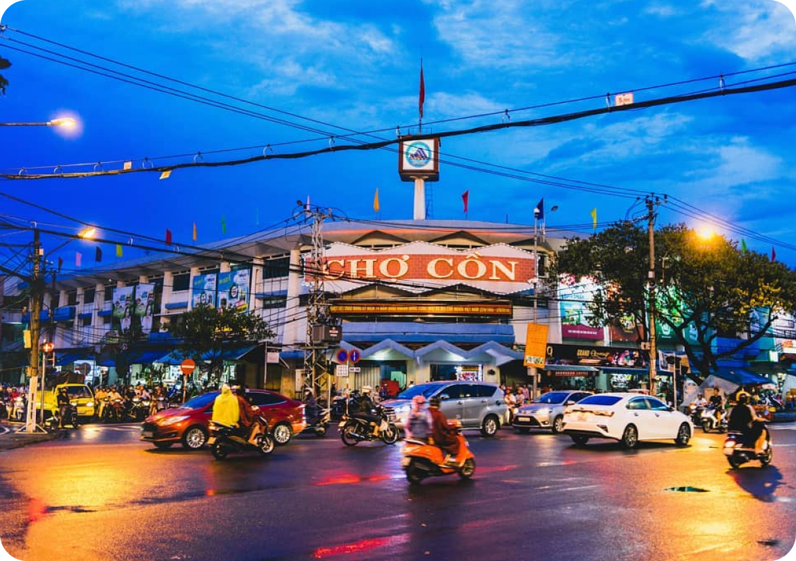

About us
"Cù Duy Đức là trưởng nhóm tài năng, luôn mang đến tầm nhìn và sự chỉ đạo chiến lược cho nhóm. Với khả năng quản lý dự án và giao tiếp hiệu quả, Duy Đức đã dẫn dắt nhóm vượt qua nhiều thách thức và đạt được kết quả ấn tượng."
Cu Duy Duc
Leader
DESTINATIONS
Hãy cùng chúng tôi khám phá các địa danh nổi tiếng ở Đà Nẵng
Đọc về những điều kỳ diệu của Đà Nẵng và khám phá những điểm đến tuyệt vời nhất. Hãy sẵn sàng để khám phá và tạo nên những kỷ niệm khó quên cùng chúng tôi.

Top các cây cầu của Đà Nẵng
Cầu Trần Thị Lý:
Được khởi công xây dựng lại và hoàn thành vào năm 2013.
Cầu Trần Thị Lý nằm ở vị trí chiến lược, bắc qua sông Hàn, nối liền hai bờ của thành phố Đà Nẵng.
Cầu có một nhịp chính dài 731 mét và có độ cao 145 mét.
Vẻ đẹp của cầu Trần Thị Lý nằm ở thiết kế hiện đại và tinh tế, cầu có một nhịp chính dài 731 mét với cấu trúc dây văng độc đáo.
Cầu Sông Hàn:
Được khởi công vào ngày 2 tháng 9 năm 1998 và hoàn thành vào ngày 29 tháng 3 năm 2000, đúng vào dịp kỷ niệm 25 năm giải phóng Đà Nẵng.
Cầu Sông Hàn bắc qua sông Hàn, nối liền hai quận Hải Châu và Sơn Trà, thuộc trung tâm thành phố Đà Nẵng.
Cầu Sông Hàn nổi bật với thiết kế cầu quay độc đáo, hệ thống chiếu sáng hiện đại với đèn LED nhiều màu sắc làm cho cầu Sông Hàn trở nên lộng lẫy và huyền ảo vào ban đêm.
Cầu Rồng:
Chính thức khởi công xây dựng vào ngày 19 tháng 7 năm 2009 và hoàn thành vào ngày 29 tháng 3 năm 2013.
Cầu Rồng bắc qua sông Hàn, kết nối đường Nguyễn Văn Linh từ sân bay quốc tế Đà Nẵng với đường Võ Văn Kiệt, con đường trực tiếp dẫn ra bãi biển Mỹ Khê nổi tiếng.
Cầu Rồng nổi bật với thiết kế mang hình dáng con rồng vươn ra biển Đông, biểu tượng của sự phát triển và thịnh vượng.Vào mỗi tối cuối tuần và các ngày lễ, cầu Rồng trở nên sống động với màn trình diễn phun lửa và phun nước, thu hút rất nhiều du khách và người dân địa phương.
Cầu Thuận Phước:
Được khánh thành vào năm 2009, cầu Thuận Phước là cây cầu dây võng dài nhất Việt Nam, với chiều dài 1.850 mét.
Cầu Thuận Phước nằm ở vị trí đắc địa, tại cửa biển sông Hàn, nơi dòng sông gặp biển cả.
Vẻ đẹp của cầu Thuận Phước được thể hiện qua thiết kế kiến trúc hiện đại và tinh tế. Cầu có hệ thống dây võng chắc chắn, với những cột trụ cao vút, tạo nên một hình ảnh mạnh mẽ và uy nghi.

Chợ Cồn
Lịch sử hình thành:
Chợ Cồn là một trong những chợ nổi tiếng và lâu đời nhất tại thành phố Đà Nẵng, Việt Nam.
Được xây dựng vào năm 1940,ban đầu chỉ là một khu chợ nhỏ phục vụ cho nhu cầu mua bán của người dân địa phương.
Qua nhiều thập kỷ, chợ đã trải qua nhiều lần cải tạo để trở thành một khu chợ sầm uất như ngày nay.
Vị trí:
Chợ Cồn tọa lạc tại số 290 đường Hùng Vương, phường Hải Châu 2, quận Hải Châu.
Vị trí này không chỉ thuận tiện cho việc giao thương mà còn dễ dàng tiếp cận từ nhiều khu vực khác nhau trong thành phố.
Với vị trí đắc địa, Chợ Cồn thu hút không chỉ người dân địa phương mà còn rất nhiều du khách trong và ngoài nước đến tham quan và mua sắm
Vẻ đẹp:
Vẻ đẹp của Chợ Cồn không chỉ nằm ở sự đa dạng và phong phú của các mặt hàng mà còn ở không khí nhộn nhịp và sôi động của chợ.
Khu vực ẩm thực của chợ đặc biệt nổi tiếng với vô vàn món ăn ngon như bánh xèo, mì Quảng, bún mắm nêm và các loại chè truyền thống.
Hương thơm của các món ăn và tiếng gọi mời chào của các tiểu thương tạo nên một không gian đầy màu sắc và sinh động.
Đèo Hải Vân
Lịch sử hình thành:
Đèo Hải Vân là một trong những thắng cảnh nổi tiếng và hùng vĩ nhất của Việt Nam, nằm giữa thành phố Đà Nẵng và tỉnh Thừa Thiên Huế.
Nơi đây từng là ranh giới tự nhiên giữa Đại Việt và Chiêm Thành, và cũng là tuyến đường chiến lược trong các cuộc kháng chiến chống ngoại xâm.
Qua nhiều thập kỷ, chợ đã trải qua nhiều lần cải tạo và mở rộng để trở thành một khu chợ sầm uất và đa dạng như ngày nay.
Vị trí:
Vị trí của đèo Hải Vân rất đặc biệt, nằm trên quốc lộ 1A, tuyến giao thông huyết mạch nối liền Bắc và Nam Việt Nam.
Đèo Hải Vân là ranh giới tự nhiên giữa thành phố Đà Nẵng và tỉnh Thừa Thiên Huế, tạo nên một khung cảnh hùng tráng và tuyệt đẹp.
Từ đỉnh đèo, du khách có thể ngắm nhìn toàn cảnh vịnh Lăng Cô với bãi cát trắng mịn, biển xanh ngắt phía Thừa Thiên Huế
Vẻ đẹp:
Vẻ đẹp của đèo Hải Vân không chỉ nằm ở cảnh quan thiên nhiên hùng vĩ mà còn ở sự hòa quyện giữa núi non và biển cả.
Những cung đường uốn lượn quanh co, lúc ẩn lúc hiện giữa màn sương mờ ảo tạo nên một cảnh tượng thơ mộng và đầy thách thức.
Đặc biệt, vào những ngày trời quang, từ đỉnh đèo, du khách có thể chiêm ngưỡng cảnh bình minh hoặc hoàng hôn tuyệt đẹp.
Biển Mỹ Khê Đà Nẵng
Lịch sử hình thành:
Nằm ở rìa thành phố Đà Nẵng, là một trong những bãi biển nổi tiếng nhất của Việt Nam.
Từ thời chiến tranh Việt Nam, bãi biển này đã được biết đến như một điểm đến thư giãn lý tưởng cho lính Mỹ và từ đó, tên gọi Mỹ Khê bắt đầu phổ biến.
Được tạp chí Forbes bình chọn là một trong sáu bãi biển quyến rũ nhất hành tinh vào năm 2005.
Vị trí:
Nằm dọc theo tuyến đường Võ Nguyên Giáp, cách trung tâm thành phố Đà Nẵng khoảng 6 km về phía đông
Bãi biển kéo dài khoảng 10 km, từ bán đảo Sơn Trà ở phía bắc đến Ngũ Hành Sơn ở phía nam.
Vị trí thuận lợi của biển Mỹ Khê giúp du khách dễ dàng tiếp cận từ các điểm du lịch khác trong thành phố.
Vẻ đẹp:
Biển Mỹ Khê nổi bật với bãi cát trắng mịn, nước biển trong xanh và ấm áp quanh năm.
Với độ dốc thoai thoải và sóng biển êm đềm, đây là nơi lý tưởng cho các hoạt động tắm biển, bơi lội và các môn thể thao dưới nước như lướt ván...
Khu vực xung quanh biển Mỹ Khê được phát triển với nhiều khách sạn, resort và nhà hàng sang trọng, mang đến đầy đủ tiện nghi cho du khách.
Chùa Linh Ứng Bãi Bụt - Sơn Trà
Lịch sử hình thành:
Khởi công xây dựng vào năm 2004 và hoàn thành vào năm 2010.
Chùa Linh Ứng Bãi Bụt, còn được gọi là Chùa Linh Ứng Sơn Trà, là một trong ba ngôi chùa Linh Ứng nổi tiếng của thành phố Đà Nẵng.
Theo truyền thuyết, nơi đây từng có một tượng Phật trôi dạt vào bờ biển, mang lại bình an và hạnh phúc cho người dân địa phương.
Vị trí:
Chùa Linh Ứng Bãi Bụt tọa lạc trên bán đảo Sơn Trà, cách trung tâm thành phố Đà Nẵng khoảng 10 km về phía đông bắc.
Vị trí đắc địa này mang lại cho chùa một khung cảnh thiên nhiên tuyệt đẹp và không gian thanh bình, tách biệt khỏi sự ồn ào của thành phố.
Chùa nằm ở độ cao 693 mét so với mực nước biển, nhìn ra biển Đông và thành phố Đà Nẵng.
Vẻ đẹp:
Chùa Linh Ứng Bãi Bụt nổi bật với tượng Phật Quan Thế m cao 67 mét, được xem là tượng Phật cao nhất Việt Nam.
Tượng được đặt trên một đài sen lớn, nhìn ra biển Đông, biểu tượng cho lòng từ bi và sự bảo hộ cho người dân và ngư dân trong vùng.
Từ chùa, du khách có thể ngắm nhìn toàn cảnh thành phố Đà Nẵng, bán đảo Sơn Trà và biển Đông rộng lớn, đặc biệt vào lúc bình minh và hoàng hôn.

Bà Nà Hills
Lịch sử hình thành:
Khu du lịch này có nguồn gốc từ thời Pháp thuộc.
khi người Pháp phát hiện ra Bà Nà vào đầu thế kỷ 20 và bắt đầu xây dựng nơi đây thành một khu nghỉ dưỡng vào năm 1919.
Sau nhiều năm bị bỏ hoang, Bà Nà Hills đã được khôi phục và phát triển mạnh mẽ từ năm 2007 bởi tập đoàn Sun Group.
Vị trí:
Bà Nà Hills nằm ở xã Hòa Ninh, huyện Hòa Vang, cách trung tâm thành phố Đà Nẵng khoảng 25 km về phía tây nam.
Khu du lịch nằm trên đỉnh núi Chúa, ở độ cao 1.487 mét so với mực nước biển.
Vị trí đặc biệt này mang lại cho Bà Nà Hills khí hậu mát mẻ quanh năm và cảnh quan hùng vĩ, với những rừng thông bạt ngàn và tầm nhìn bao quát xuống toàn cảnh thành phố và biển Đông.
Vẻ đẹp:
Bà Nà Hills nổi tiếng với vẻ đẹp thiên nhiên hùng vĩ và các công trình kiến trúc ấn tượng.
Một trong những điểm nhấn nổi bật nhất của Bà Nà Hills là hệ thống cáp treo đạt nhiều kỷ lục thế giới.
Chuyến cáp treo đưa du khách từ chân núi lên đỉnh Bà Nà với những cảnh quan tuyệt đẹp từ trên cao.
FOODS
Top 4 địa điểm ăn uống nổi tiếng ở Đà Nẵng
Cùng chúng tôi khám phá các địa điểm ăn uống ngon và nổi tiếng. Ở đây bạn có thể tìm thấy một trong những món yêu thích của bạn.

Chợ đêm Helio
 Đường 2/9, Bình Hiên, Quận Hải Châu, Thành Phố Đà Nẵng
Đường 2/9, Bình Hiên, Quận Hải Châu, Thành Phố Đà Nẵng
Chợ đêm Helio nổi bật với không gian rộng rãi, được trang trí ánh sáng rực rỡ và phong cách thiết kế hiện đại. Những gian hàng được bày biện bắt mắt, kết hợp với âm nhạc sôi động
Gỏi cá Nam Ô
972 Nguyễn Lương Bằng, Quận Liên Chiểu,Thành Phố Đà Nẵng
Món gỏi cá Nam Ô không chỉ ngon miệng mà còn hấp dẫn về mặt thị giác với màu sắc đa dạng từ các loại rau sống, thịt cá trắng ngần và nước chấm đậm đà. Khi ăn, gỏi cá Nam Ô mang đến hương vị tươi mát, giòn giòn của rau, vị ngọt của cá, vị bùi của đậu phộng và mè, cùng với hương vị đậm đà từ nước chấm.
Quán Đặc Sản Trần
11 Nguyễn Văn Linh, Quận Hải Châu, Thành Phố Đà Nẵng
Đặc sản Trần không chỉ là nơi để thưởng thức những món ăn truyền thống của Đà Nẵng mà còn là nơi để cảm nhận sự tinh tế và tâm huyết trong từng món ăn. Vị trí thuận lợi, lịch sử hình thành đầy tâm huyết và vẻ đẹp của các món ăn tại Đặc sản Trần đã tạo nên một thương hiệu ẩm thực được nhiều người yêu thích.
Hải Sản Lão Đại
Số 50 Đường 3/2, Quận Hải Châu, Thành Phố Đà Nẵng.
Hải sản Lão Đại không chỉ nổi bật với những món hải sản tươi ngon, đa dạng mà còn với cách trình bày đẹp mắt và hương vị tuyệt vời. Vị trí thuận lợi, lịch sử hình thành với tâm huyết và đam mê, cùng với vẻ đẹp của các món ăn đã giúp Hải sản Lão Đại trở thành một địa điểm ẩm thực được nhiều người yêu thích tại Đà Nẵng.
Được Tin Tưởng Bởi Hàng Ngàn Khách Hàng
Họ đã khám phá vẻ đẹp tự nhiên, ẩm thực đặc sắc và các hoạt động giải trí thú vị mà thành phố này mang lại.
Nguyễn Minh Anh
Thủ Đức,Sài Gòn
4.5 
“Tôi thật sự ấn tượng với màn trình diễn phun lửa và nước vào cuối tuần của Cầu Rồng thật sự ngoạn mục và đáng nhớ. Đây chắc chắn là một trong những điểm nhấn của chuyến đi Đà Nẵng của tôi!”.

Lê Thanh Hương
Quy Nhơn, Bình Định
4.5
“Biển Mỹ Khê thật tuyệt vời với bãi cát trắng và làn nước trong xanh. Tôi đã có những giây phút thư giãn tuyệt vời ở đây cùng với các hoạt động thể thao dưới nước đầy thú vị. Chắc chắn tôi sẽ quay lại!”.
Phạm Quốc Hưng
Đức Phổ, Quảng Ngãi
4.5
“Bà Nà Hills giống như một Châu Âu thu nhỏ giữa lòng Việt Nam. Khí hậu mát mẻ và cảnh quan hùng vĩ là điều tôi yêu thích nhất ở đây.”
Trần Thị Lan
Hội An, Quảng Nam
4.5
“Chợ Cồn là thiên đường ẩm thực thực sự. Tôi đã thưởng thức rất nhiều món ăn ngon và độc đáo. Đây là nơi tuyệt vời để khám phá ẩm thực địa phương và mua sắm quà lưu niệm. Mọi thứ đều rất tươi ngon và giá cả hợp lý”.
Ngô Văn Tài
Hải Châu, Đà Nẵng
4.5
“Chùa Linh Ứng thật thanh bình và đẹp mắt. Tượng Phật Bà Quan Âm cao 67 mét là một kỳ quan ấn tượng. Từ đây, tôi có thể ngắm nhìn toàn cảnh thành phố và biển Đông. Đây là nơi lý tưởng để tìm kiếm sự yên tĩnh và tĩnh tâm”.
Trải nghiệm hành trình đáng nhớ
Đừng bỏ lỡ cơ hội khám phá vẻ đẹp hùng vĩ, văn hóa phong phú, và cuộc sống đêm sôi động của Đà Nẵng.
×
- Facebook Page
Vẻ đẹp và ẩm thực: